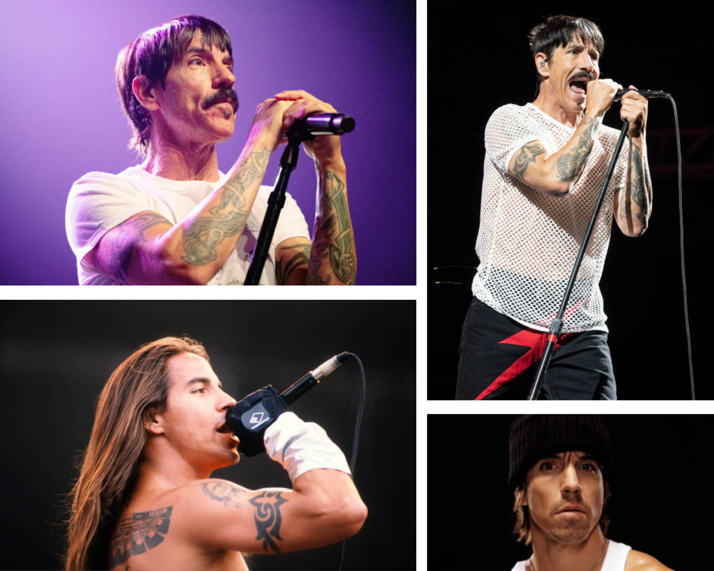
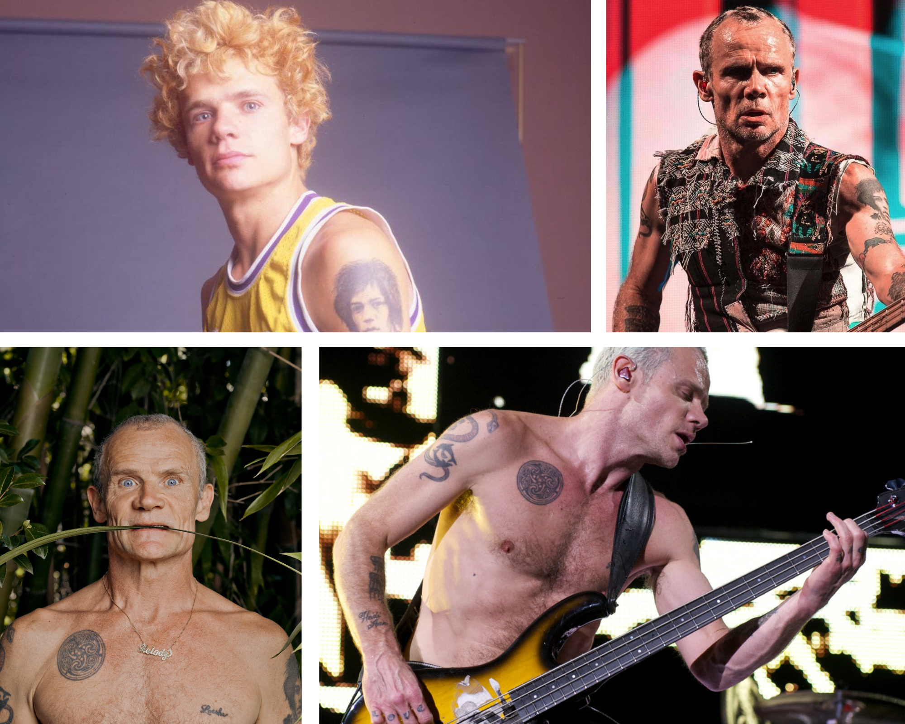
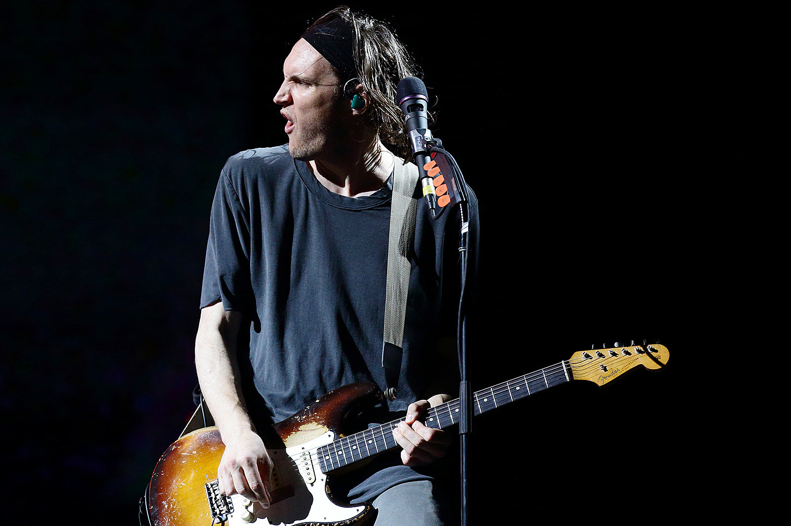
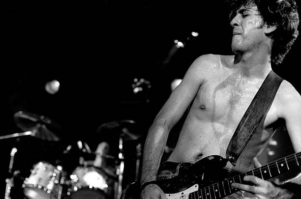
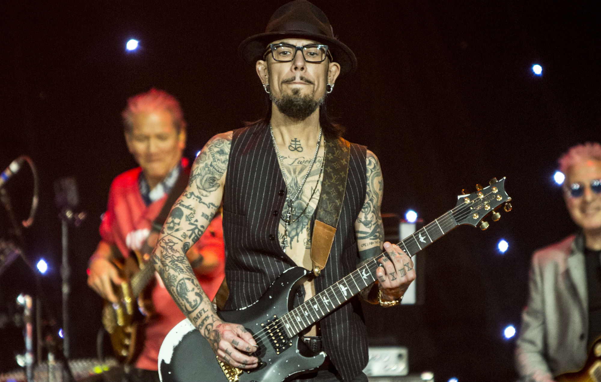
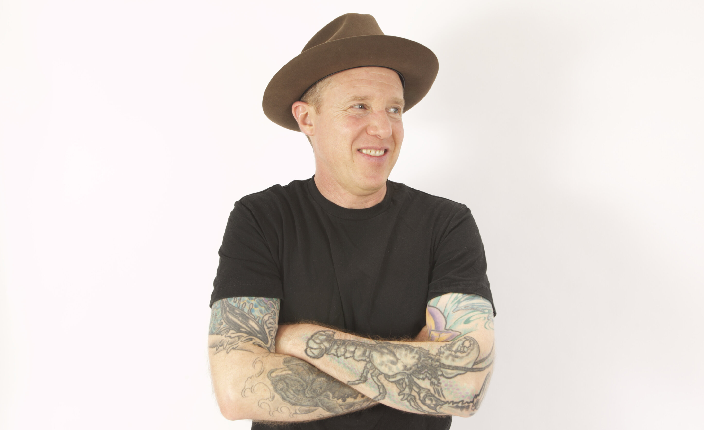

Anthony Kiedis
Anthony Kiedis urodził się 1 listopada 1962 roku. Już od najmłodszych lat był energicznym i wesołym chłopakiem. W wieku czterech lat jego rodzice się rozwiedli, wskutek czego większośc wczesnego dzieciństwa spędził z mamą w Michigan. Gdy Tony podrósł, przeprowadził się do Hollywod, do swojego ojca, Black'iego Dametta. Zasłnynął tam ze swojego kontrowersyjnego i ekstremalnego trybu życia. Uczestniczył w imprezach urządzanych przez tatę, brał kokainę, upijał się oraz palił marihuanę. W wieku 12 lat po raz pierwszy uprawiał również seks, na co pozwolił sam Blackie. Zaledwie 2 lata później zaczął brać heroinę. Wraz z ojcem widywał się z takimi osobowościami jak John Lennon, Alice Cooper czy David Bowie. Mając 14 lat zadebiutował na kinowym ekranie w filmie "F.I.S.T" w roli Kevina Kovaka, syna Johnny’ego Kovaka granego przez Sylvestra Stallone’a. Oprócz tego grał m.in w filmie "Point Break". Uczęszczał do Fairfax High School, gdzie jego najlepszymi przyjaciółmi byli Michael Balazary (szerzej znany pod pseudonimem Flea), Hilel Slovak oraz Jack Irons, którzy wraz z Tonym należeli do pierwszego, jeszcze działającego pod nazwą Tony Flow and the Miraculously Majestic Masters of Mayhem, oryginalnego składu Red Hotów. To właśnie z Flea skakał z wysokich budynków do małych basenów, przez co o mało nie skończył na wózku inwalidzkim. Wokalista ukończył liceum z wyróżnieniem i dostał się na uniwersytet Kalifornijski w Los Angeles, z którego jednak zrezygnował ze względu na uzależnienie od narkotyków. Z tego też powodu został tymczasowo wyrzucony z kapeli po nagraniu drugiej płyty - Freaky Styley. Anthony jest autorem wielu tekstów grupy, angażuje się w twórczośc zespołu. Pomimo burzliwej historii z narkotykami, które były obecne w jego życiu jeszcze przez całe lata 80' i 90', stał się filarem i znakiem rozpoznawczym "Czerwonych Papryczek".

John Frusciante
John Frusciante urodził się 5 marca 1970 roku w Nowym Jorku. Pochodził z muzycznej rodziny - jego ojciec był pianistą, a mama wokalistką. Rodzice Johna również się rozwiedli, dlatego gitarzysta zamieszkał z mamą i ojczymem w Los Anegeles. Zaangażował się w tamtejszą scenę punk rockową, a jego pierwszym ulubionym zespołem byli The Germs - to na ich albumie pt. "GI" Frusciante nauczył się improwizacji. Niedługo później dowiedział się o zespole, z którym podbił świat. Naśladował grę Jimm'iego Page'a, Jeffa Becka, Jim'iego Hendrixa oraz Franka Zappy, którego muzykę grał godzinami. Zakończył edukację po zdaniu matury, w wieku 16 lat. Zaczął studiować w Musicians Institute w Hollywood, jednak szybko ją rzucił, gdyż nie poświecał uwagi wskazówką nauczycieli. Pierwszy raz usłyszał Red Hotów na żywo, gdy miał 15 lat. Zaprzyjaźnił się z gitarzystą zespołu - Hilelem Slovakiem. Nauczył się jego wszystkich partii gitarowych oraz rozmawiał z nim po koncertach. Po jego śmierci z przedawkowania w 1988r., Flea zapoponował przesłuchanie Johna - od razu został przyjęty do zespołu. Mniej więcej w tym samym czasie do szeregów "Papryczek" dołączył Chad Smith - w ten sposób uformował się klasyczny skład zespołu. Frusciante nagrał z zespołem dwa albumy - "Mother's Milk" oraz "Blood Sugar Sex Magik", który od razu stał się ogromnym hitem, jednocześnie czyniąc z zespołu światowe gwiazdy rocka. Gitarzysta czuł się przytłoczony wielką sławą, zdecydowanie wolał klubowy klimat zespołu sprzed kilku lat. Z tego powodu postanowił odejść z zespołu w trakcie trasy promującej najnowszy krążek w maju 1992r. W trakcie wspomnianej trasy John zaczął intensywnie zażywać narkotyki. Po opuszczeniu grupy wpadł w depresję, był przekonany, że nie potrafi już pisać muzyki i grać na gitarze. Przez krótki czas skupił się na malarstwie, napisał kilka nowel i scenariuszy filmowych. Otwarcie przyznawał, że jest uzależniony, twierdził, że używki są jedynym sposobem "być pewnym, że ma się kontakt z pięknem, zamiast pozwolić całej brzydocie świata, by złamała twoją duszę”. Pierwszy solowy album "Niandra Lades and Usually Just a T-Shirt" wydał 8 marca 1994. Frusciante podkreślał, że album „ma się zapisać w historii jako spójny materiał. Nie jako zbiór pojedynczych piosenek. Artykuł opublikowany przez gazetę „New Times LA” określił muzyka jako „szkielet pokryty chudą skórą”. John przeżył śmierć kliniczną, żył w skrajnej biedzie oraz miał przeszczepianą skórę i zęby. Swój drugi solowy album, Smile from the Streets You Hold, Frusciante wydał w 1997 roku. Cały zarobek miał być przeznaczony na narkotyki. Lata 1997 i 1998 był przełomowe w walce z nałogiem. Sam zerwał z heroiną, jednak nadal pozostał alkoholikiem i brał kokainę. Z tego powodu za namową Boba Foresta, swojego serdecznego przyjaciela, udał się do kliniki na kurację odwykową. To tam doszło do wspomnianych przeszczepów. Po zerwaniu z nałogami John na nowo się odrodził. Zaczął trenować jogę oraz prowadzić bardziej duchowe życie, zmienił sposób odżywiania, wszystko po to by oddać się w pełni muzyce. W 1998 roku z Red Hotów odszedł gitarzysta Dave Navarro, a zespołowi groził rozpad. Chłopacy z zespołu uznali, że jedynym sposobem na przetrwanie jest sprowadzenie Frusciante z powrotem. Ten po otrzymaniu propozycji się rozpłakał i powiedział „nic na świecie nie uszczęśliwiłoby mnie bardziej”. Owocem reaktywacji starego składu był album "Californication" - jeden z najsławiniejszych krążków grupy. Podczas trasy promującej "Kalifornizacje" gitarzysta kontynuował pisanie własnych utworów, których większość znalazła się na trzeccim solowym albumie pt. "To Record Only Water for Ten Days". W 2002 roku nagrał z zespołem album "By the Way", któy również osiągnął ogromny sukces. Frusciante napisał i nagrał kilkadziesiąt piosenek przed, w trakcie i po trasie promującej krążek. W lutym 2004 roku założył zespoł Ataxia wraz z Joem Lallym i Joshem Klinghofferem. Grupę rozwiązano po 2 tygodniach, jednak nagrano ok. 90-minutowy materiał, z czego część piosenek pojawiła się na ścieżce dźwiękowej filmu "The Brown Bunny". Czwarty solowy album pt. "Shadows Collide With People" Frusciante wydał 24 lutego tego samego roku. W nagraniach brali udział basista i perkusista Red Hotów oraz Klinghoffer. Rok 2004 był zdecydowanie najbardziej pracowity poz względem wydań solowych projektów, gdyż artysta zapowiedział publikacje 6 nagrań w ciągu 6 miesięcy: "The Will to Death" (piąty album studyjny), "Automatic Writing" (w ramach formacji Ataxia), DC EP (trzecia ep-ka Johna), Inside of Emptiness (szósty album studyjny), A Sphere in the Heart of Silence (wspólny album Frusciante i Klinghoffera) oraz Curtains (siódmy album studyjny). Na początku 2005 rozpoczęły się prrace nad albumem "Stadium Arcadium" "Papryczek". Wtedy również rozpoczął współpracę z zespołem The Mars Volta, którego liderem jest Omar Rodríguez-López. Frusciante dodał linie wokalne i zagrał na gitarze muzykę do albumu "De-Loused in the Comatorium". Zagrał również na gitarze muzykę do albumu "Frances the Mute". W 2006 roku pomagał zespołowi przy wydaniu albumu "Amputechture" – zagrał siedem z ośmiu utworów, jakie znalazły się na płycie. Po wydaniu przez grupę Ataxia drugiego albumu studyjnego pt. "AW II" 29 maja 2007, Frusciante tymczasowo zawiesił działalność solową. Po zakończeniu trasy koncertowej promującej album Stadium Arcadium zespół podjął decyzję o zawieszeniu działalności na czas nieokreślony. Frusciante wydał swój ósmy solowy album studyjny pt. The Empyrean 20 stycznia 2009. W kolejnych latach Frusciante skupił się m.in. na nagrywaniu albumów i EP-ek, w których dominowała przede wszystkim muzyka stworzona za pomocą syntezatorów. Oprócz nagrań pod własnym nazwiskiem m.in: Letur-Lefr (czwarta EP-ka), PBX Funicular Intaglio Zone (dziewiąty album studyjny), Outsides EP (piąta EP-ka), Enclosure (dziesiąty album studyjny), wydał także dwa albumy w gatunku Acid House pod pseudonimem Trickfinger. W grudniu 2019 roku grupa Red Hot Chili Peppers ogłosiła na oficjalnym profilu w serwisie Instagram, że gitarzysta Josh Klinghoffer grający w zespole od 2009 roku opuszcza formację, a jego miejsce zajmie John Frusciante, który po dziesięciu latach postanowił powrócić do Red Hot Chili Peppers. Owocem ponownej współpracy były 2 wydane w 2022 roku albumy studyjne: "Unlimited Love" oraz "Return of the Dream Canteen", które zostały świetnie przyjęte przez fanów. Oprócz tego dwa lata przed wydaniem krążków z Red Hotami, John opublikował EP-kę "Look Down, See Us" oraz "She Smiles Because She Presses the Button" podpisując się ponownie jako Trickfinger. W tym samym roku wydał jedenasty album studyjny pt. "Maya", a najświeższym powiększeniem jego dyskografii jest "I and II" z 3 lutego 2023 roku, bedący jego dwunastym albumem studyjnym.

Flea
Flea urodził się 16 października 1962r. w Melbourne. W wieku 5 lat wraz z rodziną się do Rye w stanie Nowy Jork. Jego rodzice również się rozwiedli, pozostał w Rye wraz z rodzeństwem i mamą, która niebawem poślubiła muzyka jazzowego. Ojczym basisty wielokrotnie zapraszał do domu muzyków, z którymi urządzał sesje improwizacyjne. Rodzina przeniosła się do Los Angeles, gdzie Flea zaczął pobierać lekcje gry na trąbce, do której miał wielki talent. W tamtym czasie Flea nie wykazywał zainteresowania muzyką rockową, a jego idolami muzycznymi byli artyści jazzowi tacy jak Miles Davis czy Louis Armstrong. Ojczym muzyka był nałogowym alkoholikiem mającym problemy z prawem. Dorastał w strachu przed jego humorami, co przełożyło się na późniejsze życie. Już w wieku 13 lat zaczął palić marihuanę. Po przyjściu do Fairfax High School jego życie zmieniło się o 180 stopni. To tam poznał Anthonego Kiedisa, który stał się jego najlepszym przyjacielem. Byli jak "papużki nierozłączki". To wokalista nadał mu sławny pseudonim i podsycił zainteresowanie rockiem. Do biskiego grona znajomych muzyka należał również Hilel Slovak, gitarzysta amatorskiej grupy Anthym. To Hilel nauczył bohatera tego akapitu gry na instrumencie, aby zastąpił on obecnego basistę zespołu. Szybko uczył się gry, m.in techniki 'slappingu', która stała się charakterystyczna dla Red Hot Chili Peppers. Anthym się rozpadł po odejściu Flea, który uważał zespół za rozchwiany emocjonalnie. Szybko jednak powrócił i wraz z Hilelem oraz Jack'iem Ironsem, perkusistą Anthym, postanowili spróbować sił z Kiedisem jako wokalistą. Zespół nosił nazwę Tony Flow and the Miraculously Majestic Masters of Mayhem, którą dziś znamy jako Red Hot Chili Peppers. Flea nagrał z zespołem wszystkie albumy studyjne, które kiedykowiek powstały. Ma na koncie również pojedyncze współprace z takimi artystami jak Slash czy Ozzy Osbourne. Przeważnie basiści zespołów niestety nie są tak bardzo dostrzegani, jednak dynamiczny i błyskotliwy Flea stał się symbolem zespołu, często bedąc nazywanym "pozytywnym wariatem".
Chad Smith
Chad Smith urodził się 25 października 1961r. w St.Paul w stanie Minnesota jako trzecie dziecko Joan i Curtis Smith. Większość dzieciństwa spędził w Bloomfield Hills, gdzie ukończył szkołe średnią. Zaczął grać na perkusji już w wieku 7 lat, a dorastał słuchając zespołow takich jak Pink Floyd, Led Zeppelin, The Rolling Stones czy Deep Purple. Chad nie uczęszczał na lekcje gry na bębnach, a zbierał doświadczenie grając w szkolnych zespołach. Startował w zespole o nazwie Paradise, który wygrał bitwę zespołów w 1977r. Potem poznał się z perkusistą zespołu Pharroh, Larrym Fratangelo. To on zapozmnał Smitha z gatunkami R&B i funk'iem oraz nauczył go je grać. Sam przyznał, że dopóki nie spotkał Larrego był tylko bębniarzem, a po wspólnej nauce stał się muzykiem. Twierdzi, że funkowi perkusiści jak David Garibaldi, Greg Errico czy Jabo starks bardzo wpłynęli na jego styl. Później postnowił przeprowadzić się do Californi, aby realizować muzyczne aspiracje. W 1988r. Red Hot Chili Peppers szukali perkusity, który zastąpiłby D.H Peligro. Chad był jednym z ostatnich kandydatów na przesłuchaniu i sprawiał wrażenie, że nie będzie pasował. Jednak w momencie, w którym złapał za pałeczki i zagrał zespołowi, Kiedis i Flea od razu wiedzieli, że to jego szukają. W tym samym czasie zrekrutowany został John Frusciante. Smith oficjalnie dołączył w grudniu 1988r., a pare miesięcy później nagrywał już pierwszy album z zespołem - Mother's Milk. Od tego momentu muzyk ani razu nie opuścił zespołu. Oprócz grania w Red Hotach Chad brał tworzył i dołączał do innych projektów i zespołów. Jednym z takich są grupy Chad Smith's Bombastic Meatbats oraz Chickenfoot. Pierwszy z wymienionych to zespoł intrumentalny isnpirowany funk'iem i fusion lat 70'. Druga natomiast to hard rockowa super grupa tworzona m.in przez Joe'a Satrianiego. Obie formacje są cały czas aktywne, tylko są traktowane przez ich członków jako hobby i zajęcie dodatkowe. Oprócz tego perkusista ma na koncie współprace z takimi artystami jak Ozzy Osbourne czy Iggy Pop. Chad Smith to również znak rozpoznawalny zespołu, prawie zawsze ubrany w czapkę z daszkiem. Gdyby nie jego wystukiwanie rytmu, muzyka Red Hotów nie byłaby taka sama.

Josh Klinghoffer
Josh Klinghoffer to amerykański multiinstrumantalista oraz muzyk sesyjny. Jego przygoda w Red Hot Chili Peppers zaczęła się w 2007r., gdy w trakcie trasy promującej album Stadium Arcadium grał na dodatkowej gitarze obok Frusciante, robił chórki oraz odpowiadał za partie klawiszowe. Po 2-letniej przerwie spowodowanej zmęczeniem w zespole, Josh zastąpił Johna, który opuścił zespoł. Skład poszerzony o nowego gitarzystę rozpoczął pracę nad 11. albumem pt. I'm with You. Przez podejrzane odejście Frusciante, który opuścił zespoł tego nie ogłaszając, Klinghoffer został oficjalnie ogłoszony nowym członkiem grupy na początku 2010r. Nagrywanie albumu zaczęło się w wrześniu 2010r., a wydany został rok później w sierpniu. Nowy nabytek "Papryczek" napisał do niego muzykę i ponownie śpiewał chórki i grał partie gitarowe. W 2012r. został wprowadzony do Rock and Roll Hall of Fame jako członek zespołu. Po 3 latach rozpoczęły się prace nad następnym albumem pt. The Gateway. Już rok później ujrzał światło dzienne w czerwcu. Ostatni występ Josha w zespole odbył się 2 listopada 2019r. podczas koncertu charytatywnego. Lekko ponad miesiąc później oficjalny profil Red Hot Chili Peppers na Instagramie ogłosił, że John Frusciante powaraca do formacji.

Hillel Slovak
Hillel Slovak to amerykański muzyk pochodzenia izraelskiego. W Fairfax High School poznał Anthonego Kiedisa i Michaela "Flea" Balzary, z któymi stał się najlepszymi przyjaciółmi. Hilel na początku grał w grupie Anthym, zespół się jednak rozpadł. Trio przyjaciół postanowiło tworzyć własną muzykę. Czerpali inspirację z zespołu Defunkt. Do zespołu dołączył jeszcze perkusista Anthym - Jack Irons i w ten sposób powstał zespół o nazwie Tony Flow and the Miraculously Majestic Masters of Mayhem. Zespół posiadał tylko jedną piosenkę pt. "Out in L.A" i w zasadzie został stworzony właśnie dla niej. Zespół jednak po kilku występów zaczął zbierać coraz wiekszą popularność, co wiązało się z powiększeniem repertuaru. Slovak oraz Irons opuścili grupę przed nagraniem pierwszego albumu na rzecz zespołu What is This? Jednak ku uciesze zespołu wrócił do formacji. Udało mu się z nimi nagrać 2 albumy - Freaky Styley i The Uplift Mofo Party Plan. Hilel jednak miał cora większe problemy z narkotykami. Podczas trasy koncertowej promującej Freaky Styley jego stan zdrowotny zaczął się pogarszać. Szybko tracił siły. Slovak i Kiedis postanowili dać sobie szansę na życie wolne od używek podczas europejskiej trasy promującej 3 album. Gitarzysta jednak bardzo źle znosił odstawienie heroiny. Kilka tygodni po powrocie członkowie zespołu próbowali się z nim skontaktować, jedna było już za późno - zmarł z przedawkowania.

Dave Navarro
Dave Navarro to amerykański gitarzysta, wokalista, aktor i model. Po odejściu Johna Frusciante z Red Hot Chili Peppers, zespół szukał zastępcy. Wybór padł na bohatera akapitu. Dołączył on do szeregów "Papryczek" w wrześniu 1993r. Jego pierwszy występ na wiekszą skalę miał miejsce na Woodstocku w 94'. Tego samego roku w czerwcu zaczęły się nagrania do albumu One Hot Minute, który został opublikowany w wrześniu 1995r. Pomimo początkowych mieszanych uczuć, płyta pokryła się wielokrotną platyną i zdobyła wielką popularność. Styl nowego gitarzysty i powrót do psychodeliczno-metalowych korzeni nadał całemu krążkowi unikalny charatkter. Dave koncertował z Red Hotami jeszcze przez 3 lata, ponieważ w 1988r. został wyrzucony za zażywanie używek i muzycznych różnic, jednocześnie dając szanse Frusciante na powrót do zespołu.

Jack Irons
Jack Irons to amerykański perkusista. To on był pierwszym bębniarzem Red Hot Chili Peppers. W Fairfax High School tworzył zespoł Anthym, później znany jako What Is This?, wraz z Hilelem Slovakiem. Niedługo potem do zespołu dołączył Michael "Flea" Balzary. Po tym jak Anthym się rozpadł, uformowała się nowa grupa zawierająca wymienionych członków, poszerzona jednak o nowego wokalistę - Anthonego Kiedisa. Irons jednak gra dopiero na trzecim i jego jedynym studyjnym albumie Red Hotów. Spowodowane to było wcześniejszym powrotem do Anthymu, znanego już pod odświeżoną nazwą. Po dramatycznej śmierci Hilela, Irons był tym przerażony, co było powodem odejścia. Jack czasami okazjonalnie pojawia się z zespołem, jak np. podczas trasy promującej album The Gateway.
 Niandra LaDes and Usually Just a T-Shirt
Niandra LaDes and Usually Just a T-Shirt